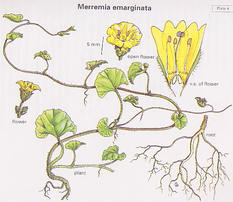

|
ECONOMICALLY
IMPORTANT PLANTS OF INDIA |
| Under-utilized Food and Fodder species and their wild relatives | Contributed by Ms.M.L Annapurna And Dr. Dhanapal, UAS, Bangalore |
Merremia
emarginata Hallier.f.
----- Taxonomic Details

----- Correct Name
----- Classification
----- Synonyms
----- Common Names
Other Biological Details
----- Habit and Habitat
----- Diagnostic Features
----- Reproductive Biology
---------- Breeding System
---------- Phenology
---------- Pollinators
---------- Seed Biology
----------Seed Germination
------ Cultivation
----- Major Pests and Diseases
Economic Potential and Uses
----- Parts Used
----- Uses
----- Harvesting Practices
----- Produce and Products
----- Chemistry
----- Processing Techniques
----- Other uses
----- Economic Potential to the Country
----- Export Potential
Miscellaneous Information
Literature
HABIT & HABITAT:
Habitat:
Cultivated fields and Plains, Damp places, Dry fields, Dry habitats,
Forests, Hilly regions, moist places, Plains, Ponds, wastelands and
forests.
Biotic
Zone:
Deccan and Carnatic, Deccan Plateau, Goa ghats, Konkan and Western
peninsular India.
Altitude
Minimum:
0-300,
Altitude
Maximum:
0-1000,
Availability :
Soil:
It prefers gravelly soil.
Misc:
Ashanagra, Baran, Chaksu, Chiknipur, Dhapsa, Durg, East aravalli, Gandhar,
Khuria, N. circar hills, Pochammaralu, Puna pathar forest, Punapathar
forest, Raipur, Singhari, Siras and R.F,Sitanadi.
Country:
Africa, Ceylon, India and Tropical Africa.
Zone:
Central, South and West.
State:
Andhra Pradesh, Goa Daman Diu, Karnataka, Madhya Pradesh, Maharashtra,
Rajasthan, Tamil Nadu and Uttar Pradesh.
District:
Agra, Banswara, Barmer, Bastar, Belgaum, Bharatpur, Bilaspur, Chattarpur,
Chengalpattu, Dadra, Damoh, Durg, Jaipur, Kota, Medak, Nagerhaveli, Pune,
Raipur, Rajnandgaon, Ramnathapuram, Salem, Seoni, South Arcot, Thanjavur,
Tiruchi, Tonk and Trichurapalli.
Status :
DIAGNOSTIC FEATURES:
This
is a slender, prostates, creeping, smooth or somewhat hairy herb. The stems root
at the nodes, and are 10 to 80 centimeters in length. The leaves are small,
kidney-shaped to somewhat heart-shaped, 6 to 15 millimeters long, often wider
than long, and irregularly toothed. One to three flowers occur on short stalks
in the axils of the leaves. The sepals are rounded and about 4 millimeters long,
with few to many white, weak hairs. The corolla is yellow, and nearly twice as
long as the calyx. The capsule is rounded and about 5 millimeters in diameter.
Phenology :
The flowering occurs during August-November
and in some places it will be from November-April.
Pollinators:
Seed Biology :
Seed Germination:
MAJOR PESTS & DISEASES
Cultivation:
Pests:
Diseases:
Economic
Potential and Uses
Parts used:
Plant.
1. The plant is eaten as pot-herb.
Chemistry
1. It is considered deobstruent, diuretic and alternative, and used in rheumatism and neuralgia.
2. It is used for coughs.
3. The juice of the plant is dropped into the ear to cure sores.
Export Potential
Flora of Banswara District, Rajasthan,V.Singh,1983,Library,Atree,Bangalore.
Flora of Raipur, Dorg & Rajnandgaon,D.M.Verma, P.C.Pant & M.I.Hanfi,1984,Library,Atree,Bangalore.